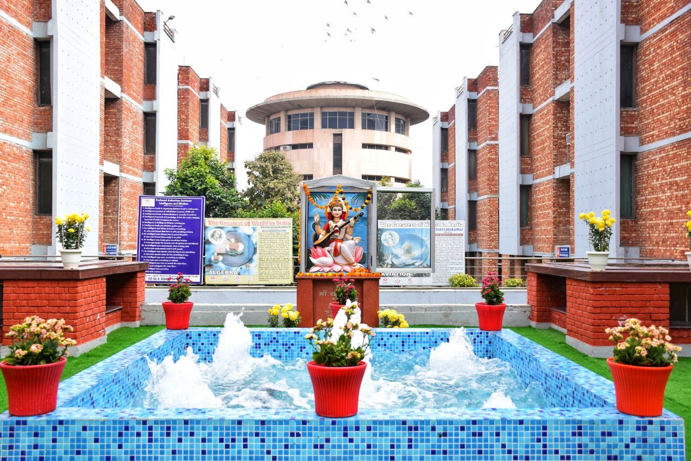
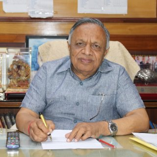

India · IST (UTC+5:30)
Maharaja Agrasen Institute of Technology
Sector 22, PSP Area, Rohini, Delhi – 110086 · affiliated to GGSIPU
View on map ↗1st International Conference on
AIRCPES 2027
Organised by Maharaja Agrasen Institute of Technology (MAIT), Delhi, India
in collaboration with Birmingham City University (BCU), UK
8th – 9th March, 2027 · Hybrid Mode
Warm greetings from Maharaja Agrasen Institute of Technology (MAIT), Delhi. We are pleased to announce the 1st International Conference on Artificial Intelligence for Resilient Cyber-Physical Energy Systems (AIRCPES 2027), to be held on 8–9 March 2027 in hybrid mode, with parallel sessions at MAIT, Delhi and Birmingham City University (BCU), UK.
The conference will bring together researchers, academics, industry professionals and practitioners to share recent developments, research findings and practical experiences in artificial intelligence, cyber-physical systems and resilient energy technologies.
It will focus on emerging approaches for developing intelligent, secure, reliable and sustainable energy systems, including the application of AI and digital technologies to smart grids, microgrids, renewable energy, energy storage, electric vehicles and critical energy infrastructure.

Chief PatronsDr. Nand Kishore GargFounder & Chief Advisor, MATES, India Co-General ChairsDr. Sachin GuptaProfessor & Dean (R&I), Maharaja Agrasen Institute of Technology, Delhi, India
Co-General ChairsDr. Sachin GuptaProfessor & Dean (R&I), Maharaja Agrasen Institute of Technology, Delhi, India ConvenersDr. Neelu NagpalProfessor, Electronics & Communication Department, Maharaja Agrasen Institute of Technology, Delhi, India
ConvenersDr. Neelu NagpalProfessor, Electronics & Communication Department, Maharaja Agrasen Institute of Technology, Delhi, India ConvenersDr. Sandeep DhundharaBirmingham City University (BCU), UK
ConvenersDr. Sandeep DhundharaBirmingham City University (BCU), UKParallel hybrid sessions at both campuses; authors may present in person at either venue or online.

Sector 22, PSP Area, Rohini, Delhi – 110086 · affiliated to GGSIPU
View on map ↗Millennium Point, Curzon St, Birmingham B4 7AP
View on map ↗